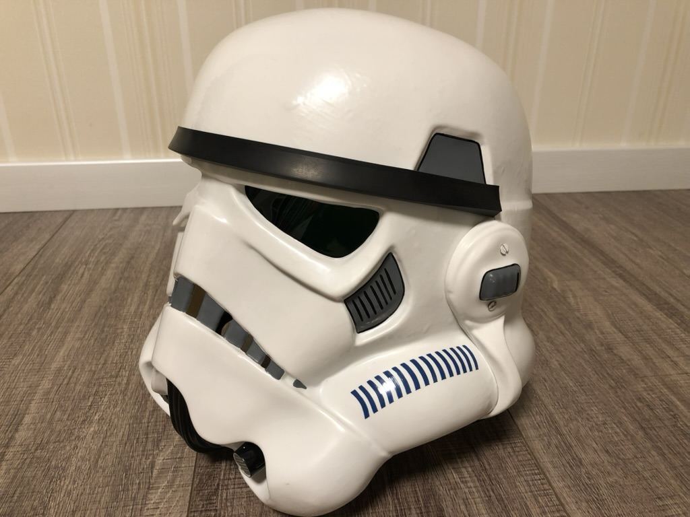

501軍団への参加
「501軍団（The 501st Legion）」は、世界中の『スター・ウォーズ』ファンによって構成されたコスチューム団体です。 正式にはルーカスフィルム非公認ながらも、映画に忠実な衣装の再現度の高さと慈善活動への積極的な参加から、公式イベントにも多数参加している国際的なファングループです。
この団体では、着用するストームトルーパ―などのコスチュームはすべてメンバー自身が製作しています。 公式の「Costume Reference Library（CRL）」で定められた基準を満たさなければ承認されず、裁縫・塗装・3D加工など多様な技術が要求される、非常にクオリティの高い手作りプロジェクトです。
私の趣味は、スター・ウォーズの悪役キャラクターであるストームトルーパーなどに扮し、世界的なファン団体「501軍団」に参加して活動することです。 この団体は「悪役が善行をする（Bad guys doing good）」というモットーのもと、病院慰問やチャリティーイベントなど、さまざまな社会貢献活動を行っています。
映画の中では恐れられる存在であるストームトルーパーですが、実生活では子どもたちに笑顔を届ける活動を通じて、多くの人に喜ばれることが私のやりがいです。
ヘルメット組み立て途中
ヘルメットのパーツと組み立て途中の状態。すべて手作業で加工・接着しています。

完成したヘルメット
完成したヘルメットのクローズアップ。CRL基準に準拠した精密な仕上がり。
装甲パーツ全体
全身アーマーの各パーツ。切断、やすりがけ、塗装などすべて自作。
上半身装着状態
上半身のアーマー装着状態。細部にこだわり、映画そのままの雰囲気を再現。
イベント参加
イベント参加時の様子。他の501軍団メンバーと共に登場し、会場を盛り上げました。
チャリティーイベント
チャリティーイベントで子供や来場者と記念撮影。「悪役が善行をする」を実践。